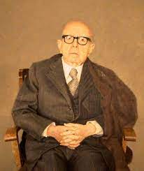

Dámaso Alonso y Fernández de las Redondas (Madrid, 22 de octubre de 1898 - 25 de enero de 1990). Poeta español, profesor, lingüista y crítico literario.
Pasa su infancia en La Felguera (Asturias), pero es en Madrid donde termina sus estudios superiores en Derecho y en Letras. Es alumno de Ramón Menéndez Pidal en el Centro de Estudios Históricos y compañero en la Residencia de Estudiantes de los artistas que forman parte de la Generación del 27. Enseña lengua y literatura española en diversas universidades extranjeras, como Berlín, Cambridge, Oxford, Stanford University (California), Hunter College, Columbia University (Nueva York) y Leipzig. Dentro de España, enseña en las universidades de Valencia, Barcelona y Madrid.
Es director de la Revista de filología española y de la colección Biblioteca Románica Hispánica de la Editorial Gredos. También dirige el Instituto Antonio de Nebrija del Consejo Superior de Investigaciones Científicas y colabora en la Revista de Occidente y en Los Cuatro Vientos.
Simultanea obras de creación literaria, de las que es característico el “realismo léxico”, con obras de historia y crítica en el campo de la estilística, estudiando a los poetas clásicos españoles y la lírica de tipo popular. Como traductor de las obras de James Joyce utiliza el seudónimo de Alfonso Donado.
Académico de número desde 1945, es director de la Real Academia Española durante los años 1968 a 1982. Es también nombrado miembro de otras academias y asociaciones, como la Real Academia de Historia, la Modern Language Association o la Asociación de Hispanistas, que además preside de 1962 a 1965.
Su principal labor como director de la Real Academia Española consiste en la organización de encuentros con las academias americanas, para trabajar en común por la lengua castellana.
La sala Dámaso Alonso de la Real Academia está dedicada íntegramente a la biblioteca del autor, recogiendo cerca de 40.000 volúmenes y diversos objetos personales.
El 14 de febrero de 2007, la Biblioteca del Instituto Cervantes de Dublín es inaugurada con el nombre de Dámaso Alonso.

INSOMNIO Madrid es una ciudad de más de un millón de cadáveres (según las últimas estadísticas). A veces en la noche yo me revuelvo y me incorporo en este nicho en el que hace 45 años que me pudro, y paso largas horas oyendo gemir al huracán, o ladrar los perros, o fluir blandamente la luz de la luna. Y paso largas horas gimiendo como el huracán, ladrando como un perro enfurecido, fluyendo como la leche de la ubre caliente de una gran vaca amarilla. Y paso largas horas preguntándole a Dios, preguntándole por qué se pudre lentamente mi alma, por qué se pudren más de un millón de cadáveres en esta ciudad de Madrid, por qué mil millones de cadáveres se pudren lentamente en el mundo. Dime, ¿qué huerto quieres abonar con nuestra podredumbre? ¿Temes que se te sequen los grandes rosales del día, las tristes azucenas letales de tus noches?